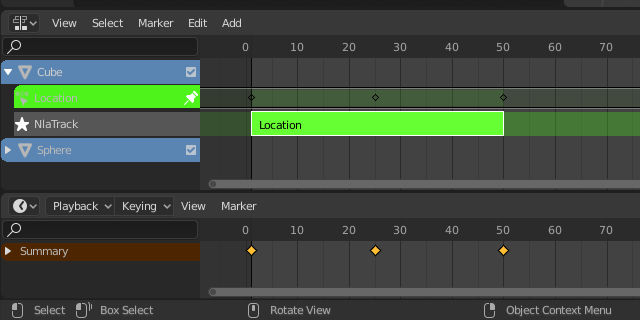
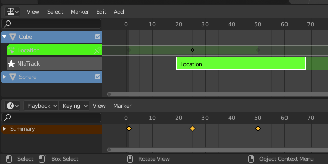

Tracks¶
Tracks are the layering system of the NLA. At its most basic level, it can help organize strips. But it also layers motion much like an image editor layers pixels – the bottom layer first, to the top, last.
NLA Tracks and Strips.
- Solo (star icon)
- Toggling Solo Track causes only the selected tracks effects to be visible when animating. This is very useful for debugging complex animations.
- Mute (speaker icon)
- Keeps the track from having an effect on the animation. (Mute only applies when Solo is not used.) All strips in that track are shown as being muted (dashed outline).
- Lock (padlock icon)
- Prevents changes from being made to this layer. This is useful, for example, if you want to select several strips and move them; but you want to keep a few tracks excluded from the change.
Action Track¶
By default, the Action Editor automatically stores the keyframes you create through the 3D View by storing them into an action based on the name as the object you are working on.
- Push Down
Turns the active action into a new NLA strip at the top of the NLA stack.

Push Down action button.
- Pin (pin icon)
If you try moving the strip, while in Tweak Mode, you will notice that the keys will go along with it. On occasion, you will prefer the keys to remain on their original frames, regardless of where the strip is. To do so, hit the unpin icon, next to the strip.
NLA strip with pinned keys.

Strip moved, notice the keys move with it.
The unpinned keys return to their original frames.
Action Stashing¶
When creating a new action, if the existing action only has a single user (i.e. the current reference only), it will get “stashed” in the NLA stack. Action Stashing should prevent most cases actions getting lost.
The action “stashing” method works by storing otherwise unused/dormant actions in the NLA stack as strips in special muted NLA tracks. This way, the action is linked up to a particular data-block (i.e. to a specific object, or to a specific material/light/etc.) and will be preserved for later use.
Deleting & Converting¶
If you decide that you no longer want a stashed action anymore, simply delete the corresponding NLA strip, then save and reload the file.
Also, note that since these are NLA strips, you can reuse these as normal NLA strips simply by un-muting (and renaming) the NLA track they live in. You may also want to move it above all the other stashed-action tracks.
Remove Empty Animation Data¶
Reference
| Menu: |
|---|
This operator removes AnimData data-blocks (restricted to only those which are visible in the animation editor where it is run from) which are “empty” (i.e. that is, have no active action, drivers, and NLA tracks or strips).
It is sometimes possible to end up with a lot of data-blocks which have old and unused Animation Data containers still attached. This most commonly happens when doing motion graphics work (i.e. when some linked-in objects may have previously been used to develop a set of reusable assets), and is particularly distracting in the NLA Editor.